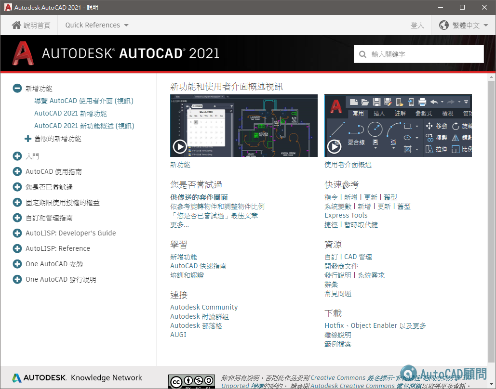
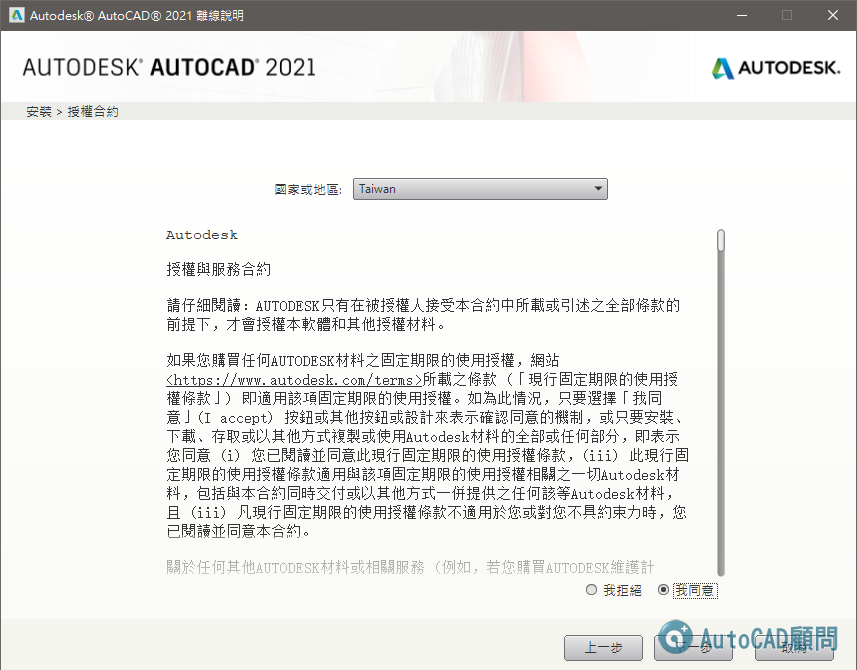
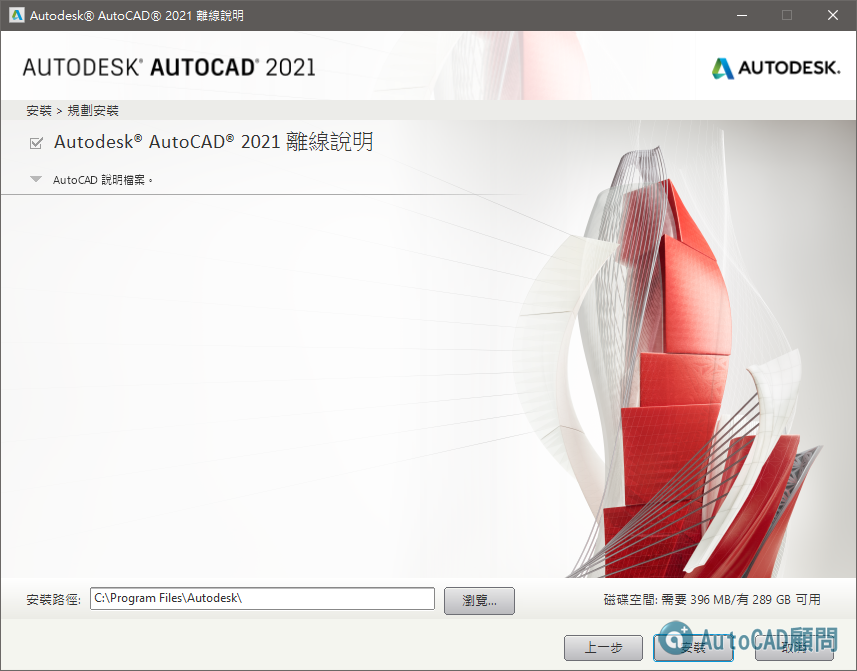
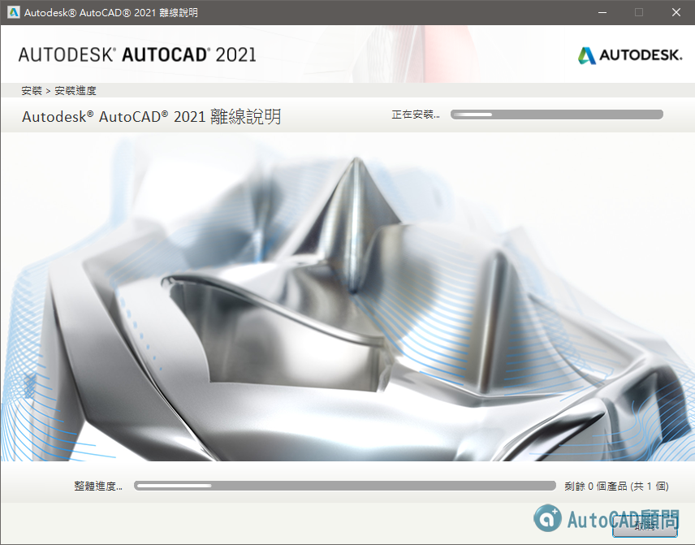
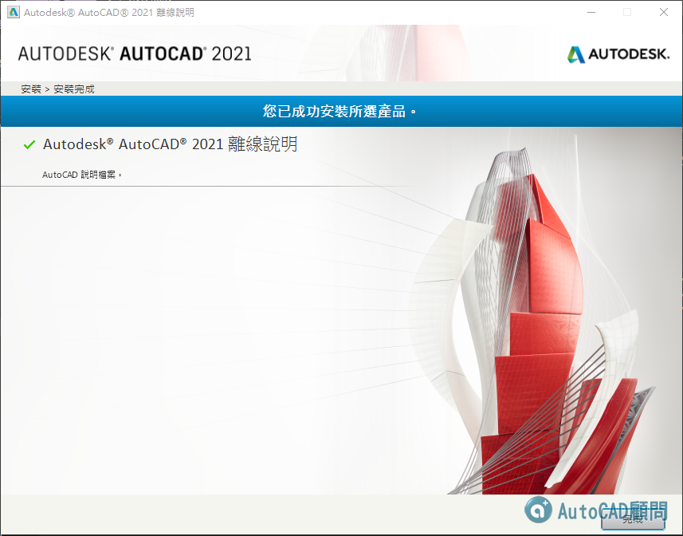
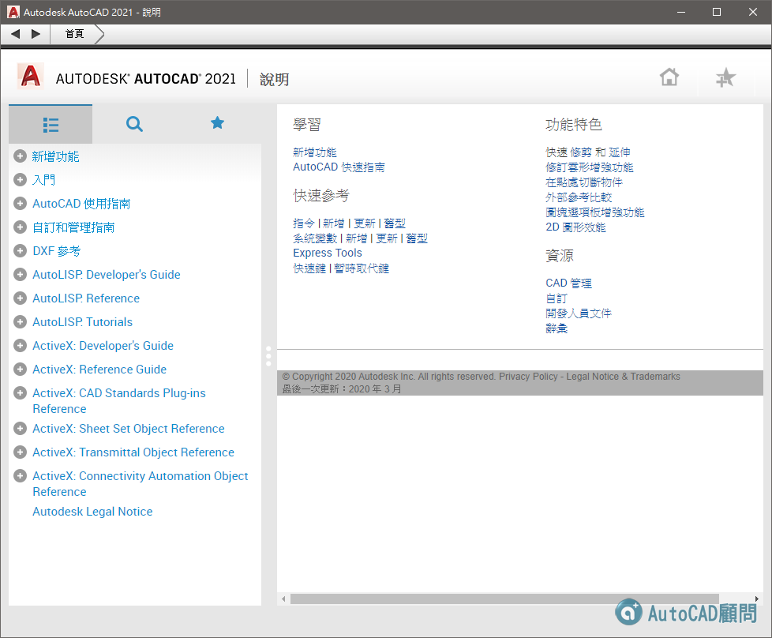

說明：在AutoCAD中預設開啟「F1說明」會使用線上版本，你必須連線網際網路。
AutoCAD 2021 線上說明（繁體中文）
http://help.autodesk.com/view/ACD/2021/CHT/
AutoCAD 2021 線上說明（英文）
http://help.autodesk.com/view/ACD/2021/ENU/
AutoCAD 2021 線上說明（簡體中文）
http://help.autodesk.com/view/ACD/2021/CHS/
AutoCAD 2021 LT版 線上說明（繁體中文）
http://help.autodesk.com/view/ACDLT/2021/CHT/
AutoCAD 2021 LT版 線上說明（英文）
http://help.autodesk.com/view/ACDLT/2021/ENU/
AutoCAD 2021 LT版 線上說明（簡體中文）
http://help.autodesk.com/view/ACDLT/2021/CHS/
說明：如果用戶沒有網際網路，可以下載離線說明版。
下載並安裝AutoCAD 2021產品離線F1說明

▼AutoCAD 2021 離線說明-安裝步驟（各版本適用）




